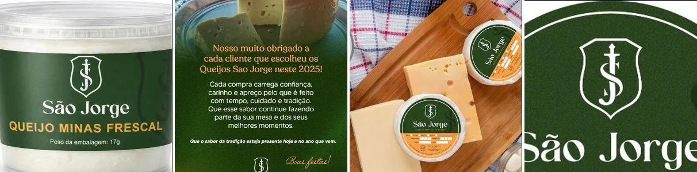
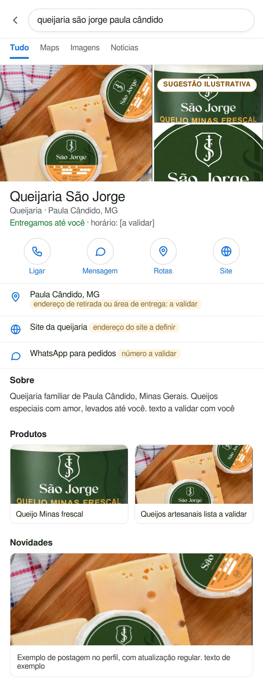
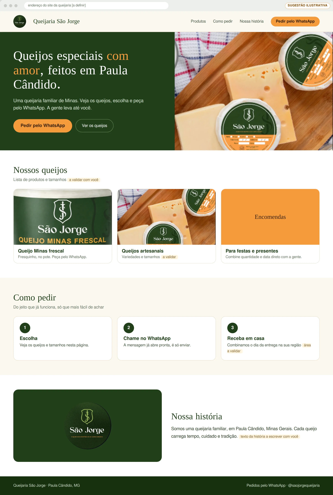
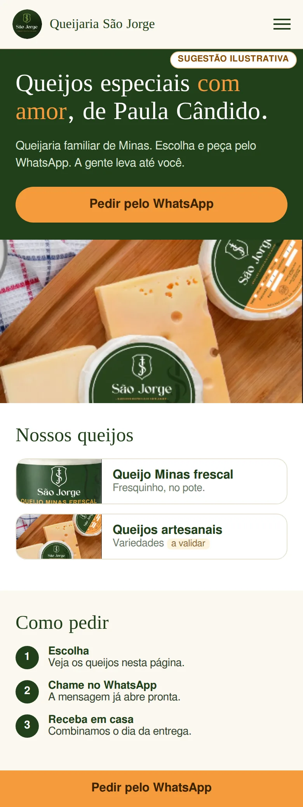
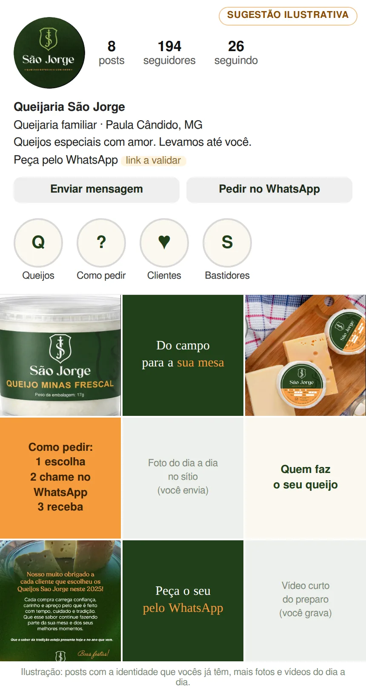

Pré-análise e proposta
Depois da nossa conversa, reunimos o que a queijaria já mostra ao mercado e uma proposta de jornada digital: ser encontrada no Google, ter um site vitrine e manter o Instagram sempre atualizado, sem pesar na rotina de quem produz.
Usamos o caminho do Método VOS: Ver com clareza, Ordenar o que existe e Sustentar com constância. Em cada etapa, mostramos o que já funciona e uma possibilidade.
Brasão, verde e laranja, rótulo com fabricação, validade e peso. Possibilidade: levar essa clareza ao Google, onde hoje não encontramos a queijaria.
Os clientes chegam e pedem. Possibilidade: reunir produtos e como pedir em um só lugar (site e destaque do Instagram), para o cliente chegar já sabendo o que quer.
Quem produz tem pouco tempo. Possibilidade: você registra fotos e vídeos do dia a dia, a YM orienta o que gravar e cuida de publicar, no ritmo que a produção permite.
Se o jeito de vender hoje funciona, ele não precisa mudar. A queijaria já tem marca, produto e clientes. O que segue são possibilidades, pensadas para ajudar a ser encontrada sem aumentar o pedido além do que a produção atende.
Leitura qualitativa, só com o que é público e o que conversamos. O Raio-X completo mede isso com dados internos.
Brasão com monograma, verde e laranja, "queijos especiais com amor".
Campos de fabricação, validade e peso.

O post de agradecimento de 2025 mostra o cuidado com quem compra.
O WhatsApp já está na bio e os pedidos chegam por ele.
As imagens abaixo são ilustrações feitas com a marca e as fotos da própria queijaria. Endereços, horários, telefone, lista de produtos e domínio ficam para validar com vocês.
Hoje: em busca pública feita em 20/10/2026 por "Queijaria São Jorge Paula Cândido", não encontramos a queijaria. Os resultados trazem o queijo São Jorge, dos Açores. Possibilidade: um Perfil da Empresa no Google com fotos, produtos, WhatsApp e área de entrega.

Hoje: ainda não há site. Quem não conhece a queijaria só chega por indicação ou pelo Instagram. Possibilidade: uma página simples com os queijos, como pedir e a história da família.


Hoje: 8 posts e 194 seguidores, com perfil claro e WhatsApp na bio. Possibilidade: uma rotina leve: você registra no sítio, a YM orienta e publica.

Um valor único por mês, sem pagamento de entrada. A implantação e o acompanhamento ficam dentro da mensalidade.
Na data que combinarmos, depois da assinatura do contrato.
R$ 500 todos os meses, no dia que você escolher: 5, 10, 15, 20 ou 25. A forma de pagamento fica definida no contrato.
Prestação de serviços por 12 meses, com assinatura digital. Depois, o valor é revisto conforme a queijaria crescer.
Pedimos fotos e vídeos conforme a lista do mês. Você registra no sítio, no tempo que tiver.
Se a proposta fizer sentido, a gente combina a data de início e o dia do mês em que a mensalidade fica melhor para você.
Conversar com a Yasmin Sem compromisso até a assinatura do contrato · resposta pelo WhatsApp